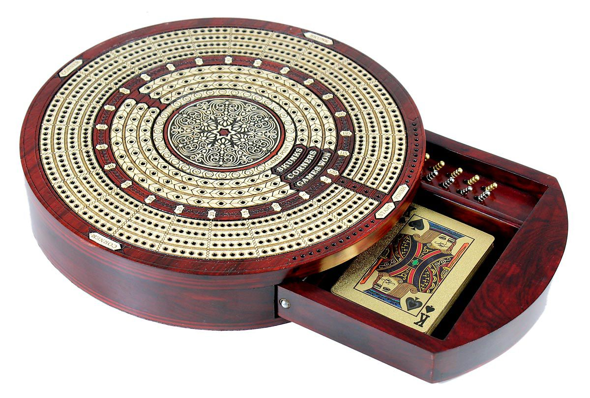

Cribbage, or crib, is a card game traditionally for two players, but commonly played with three, four or more, that involves playing and grouping cards in combinations which gain points. Cribbage has several distinctive features: the cribbage board used for score-keeping, the eponymous crib or box (a separate hand counting for the dealer), two distinct scoring stages (the play and the show) and a unique scoring system including points for groups of cards that total fifteen. -Wikipedia
The following graph shows the score progression for two players during a close game of Cribbage. The scores shown for each hand include the combined scores from the Play, the Show, and the Crib for each player.
To learn more about the rules of Cribbage.
